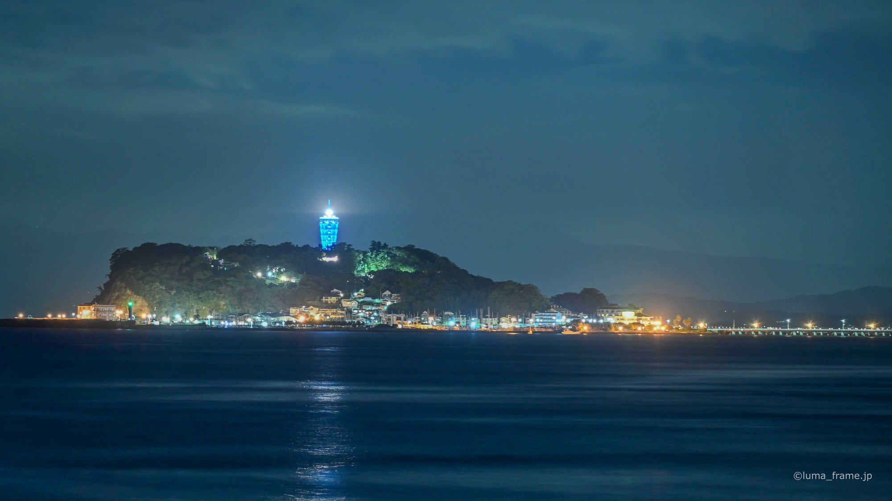
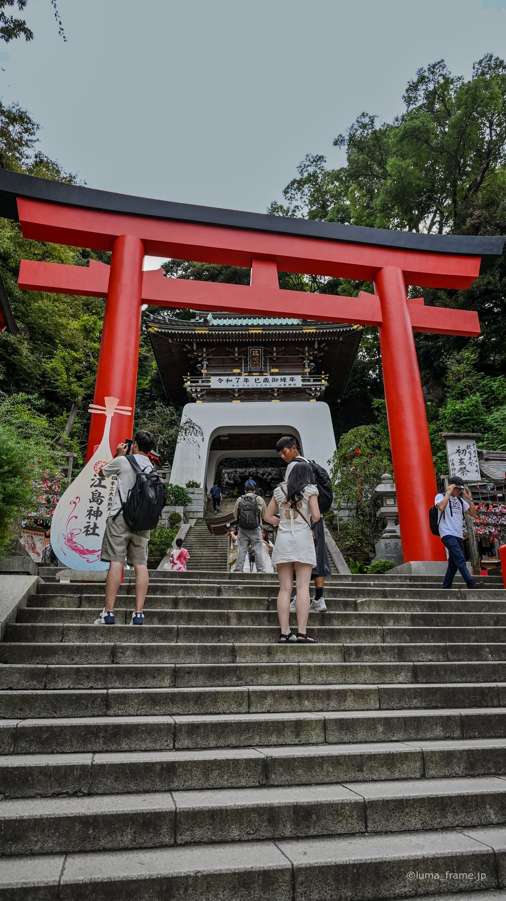
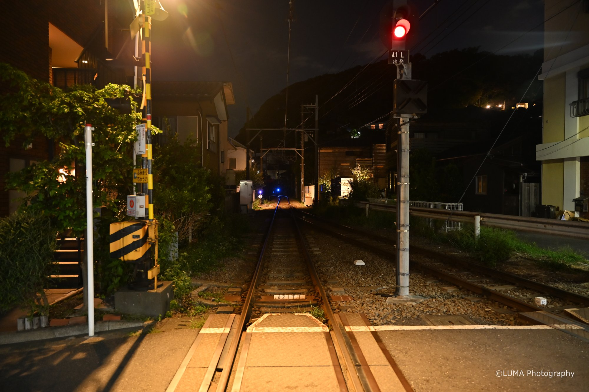
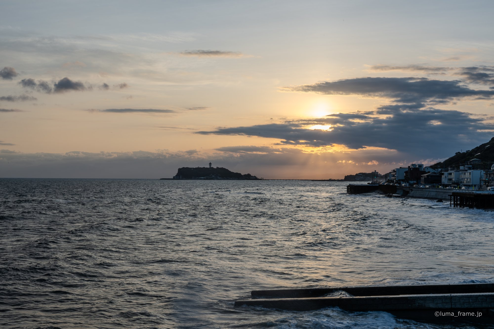
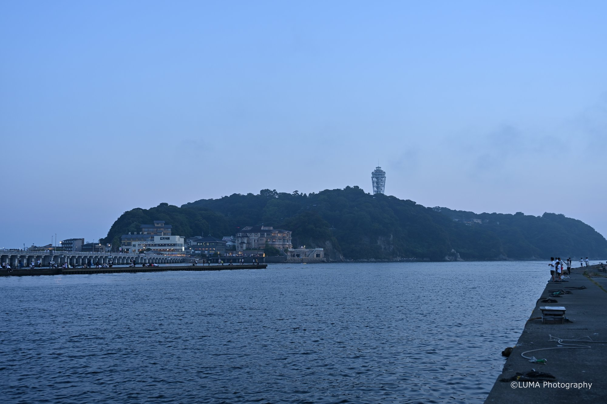
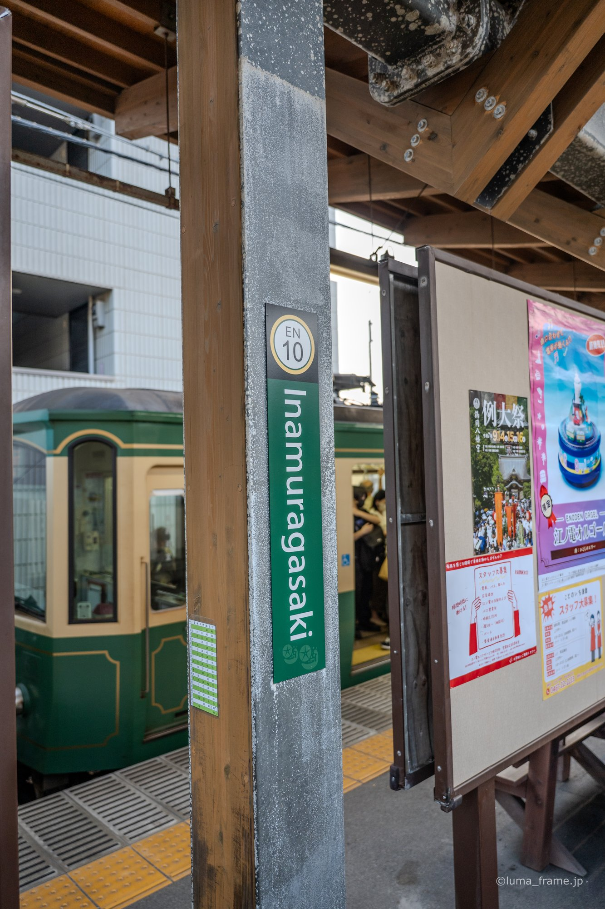
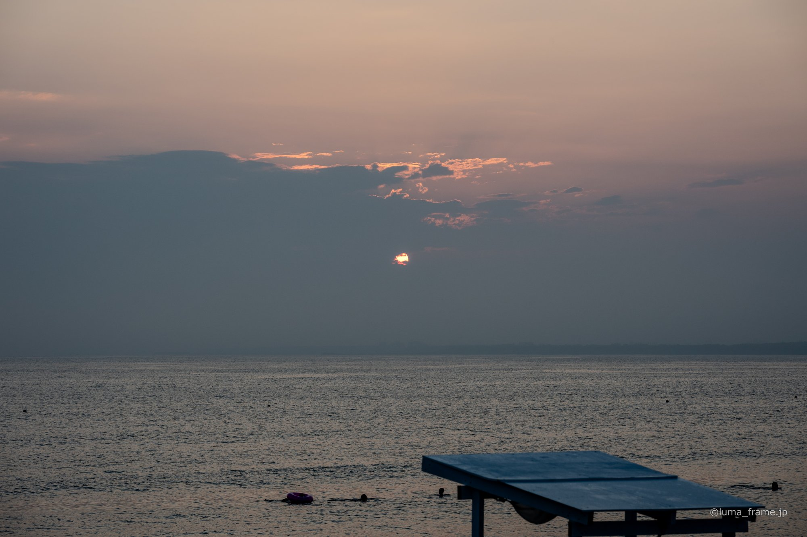

Sho's note
Sea Candle
The lighthouse deck's viewing floor is 101.56 metres above the sea, with Mt Fuji and the Tanzawa mountains on clear days. It's 800 yen.
A bronze Buddha and a bamboo garden in Kamakura, then the Enoden along the coast to an island of shrines and sea caves. Here's what I'd show you.
One price per private group of up to six, quoted in USD.
Tsurugaoka Hachimangu and the Great Buddha, or the whole of Enoshima out to the caves.
Free quoteBamboo and matcha at Hokoku-ji, the shrine, then Hase. Or Enoshima first, then the Enoden to Kamakura.
Free quoteKamakura one day, Enoshima the next.
Free quote
I spent nine years in Brisbane, from junior high to the end of university, and I guide in English or Japanese. I check our food stops with each shop before the day.

The lighthouse deck's viewing floor is 101.56 metres above the sea, with Mt Fuji and the Tanzawa mountains on clear days. It's 800 yen.

The climb to the shrines is steep. The Escar covers 46 metres in about four minutes and costs 500 yen for all three sections.

The line joins Enoshima and Kamakura. With the 800-yen day pass we can get on and off as we like.
A National Treasure, begun in 1252. For 50 yen you can step inside it, though entry can stop on very hot days.
Its Kannon is 9.18 metres tall, one of the largest wooden statues in Japan. The temple is five minutes from Hase Station.
A grove of moso bamboo, with matcha and a dry sweet served inside it for 600 yen. Last orders are at 3:30 pm.
Wakamiya-oji runs about 2 km in a straight line from the beach to Tsurugaoka Hachimangu, laid out after Suzaku-oji in Kyoto. From the top of the shrine's great steps you look over the town, and on clear days out to the Pacific and Izu Oshima.
The bronze torii at the start of Enoshima was first built in 1747 and rebuilt in 1821. The island is steep, and since 1959 the Enoshima Escar, Japan's first outdoor escalator, has lifted people 46 metres up it. On the far side, Chigogafuchi is a rock shelf known for sunsets behind Mt Fuji, and the Iwaya caves are where worship on the island began.
Kamakura asks visitors not to eat while walking in crowded places, so we eat in shops or where we can stop.




The character for eight on the plaque of Tsurugaoka Hachimangu's main hall is drawn as two doves. Toshimaya's Hato Sable takes its shape from that.
In Kamakura, the main shrine at Tsurugaoka Hachimangu is at the top of a big stone staircase, and the Great Buddha is on flat ground. Enoshima is steep. The Escar takes you up, but the far side of the island has a lot of steps.
Local shirasu is sold from 11 March to 31 December. Fishing stops from 1 January to 10 March, so there's no raw shirasu then.
Not really. Both Kamakura and Enoshima are mostly outdoors, and Enoshima is steep. In heavy rain I'll suggest Yokohama's indoor stops instead.
Tell me your date, how many of you there are and anything you can't eat. I'll send back a route and a free quote.
Ask for a free quote →